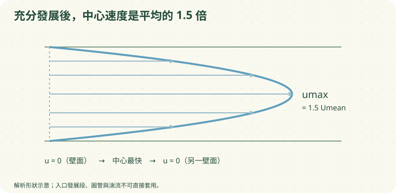

第一個 Fluent：平行板通道層流
從二維流體面、邊界命名到速度剖面與壓降檢查，完成可對照解析式的案例。
開始前
- 可使用 Workbench、Meshing 與 Fluent 2024 R2
- 已讀流體域與邊界觀念
學習目標
- 建立正確的二維平面流體域。
- 用無滑移壁面、均勻速度入口與壓力出口求解。
- 只在充分發展的下游區段比較解析壓降。
前置條件與假設
案例參數
| 項目 | 設定 |
|---|---|
| 流體域 | XY 平面，長 L = 1 m、全間隙 H = 0.010 m；單一面體，不是長方形實心管壁。 |
| 邊界名稱 | inlet：x = 0；outlet：x = 1 m；wall_top：y = H；wall_bottom：y = 0。 |
| 材料 | ρ = 998.2 kg/m³；μ = 0.001003 Pa·s；自訂定物性示例。 |
| 流動條件 | Umean = 0.010 m/s；出口表壓 0 Pa；上下無滑移。 |
| 物理模型 | Pressure-Based（壓力基）、Steady（穩態）、Planar（平面）、Laminar（層流）；Energy（能量）關閉。 |
| 初始網格 | 長度方向 200 等分、間隙方向 40 等分，約 8000 四邊形單元；還需細化比較。 |
| 解析參考 | ReDh ≈ 199；充分發展時 umax = 0.015 m/s，−dp/dx = 1.2036 Pa/m。 |
 ⤢ 放大圖解
⤢ 放大圖解操作步驟一：流體域與網格
建立 Fluent 系統
在 Workbench（分析流程平台）拖入 Fluid Flow (Fluent)（流體流動），儲存專案。Geometry（幾何）的 Analysis Type（分析類型）設 2D（二維）。
建立二維面
在 DesignModeler（幾何建模器）XY 平面畫 1000 × 10 mm 矩形草圖。使用 Concept（概念）→ Surfaces From Sketches（由草圖建立曲面）建立單一面體；不拉伸成實體。
命名四條邊
開啟 Mesh（網格）。用 Edge（邊）選取，各自 Create Named Selection（建立命名選取）為 inlet、outlet、wall_top、wall_bottom，確認沒有漏邊或重複範圍。
建立可對照的網格
對上下兩長邊插入 Sizing（尺寸），Type（類型）選 Number of Divisions（分割數）= 200；左右兩短邊設 40。對流體面插入 Face Meshing（面網格），用映射四邊形方式生成。檢查品質、單位與實際單元數，再 Update（更新）。
操作步驟二：Fluent 物理與邊界
開啟求解器並核對網格
雙擊 Setup（設定），啟動二維 Double Precision（雙精度）Fluent。General（一般）中確認 Pressure-Based（壓力基）、Steady（穩態）、2D Space（二維空間）為 Planar（平面）。使用 Mesh Check（網格檢查）並核對網格邊界座標為 1 × 0.01 m；不要把 mm 當 m。
設定層流與材料
Models（模型）→ Viscous（黏性）選 Laminar（層流），Energy（能量）維持關閉。在 Materials（材料）建立 Channel Water（通道水示例），填入密度與動黏度 μ；在 Cell Zone Conditions（單元區域條件）的 fluid（流體區）指派此材料。不要將動黏度與運動黏度互換。
設定入口
Boundary Conditions（邊界條件）將 inlet 設 Velocity Inlet（速度入口），速度取 Magnitude, Normal to Boundary（大小、垂直邊界）= 0.010 m/s；確認箭頭朝向流體域。
設定出口與壁面
outlet 設 Pressure Outlet（壓力出口），Gauge Pressure（表壓）= 0 Pa。wall_top 與 wall_bottom 設 Wall（壁面），固定壁、No Slip（無滑移）。記錄 Operating Pressure（操作壓力），本例不開重力。
操作步驟三：求解、剖面與保存
初始化與迭代
Solution Methods（求解方法）可先採 SIMPLE（壓力速度耦合）與 Second Order Upwind（二階迎風動量離散）。在 Solution Initialization（求解初始化）使用 Hybrid Initialization（混合初始化）；Run Calculation（執行計算）先跑 1000 次迭代並觀察監測。這不是保證足夠的固定次數。
同時記錄收斂與守恆
在 Residuals（殘差）監測 continuity（連續方程）與兩方向速度，教學初始目標可設 1e−6。同時用 Reports（報表）→ Fluxes（通量）檢查入口、出口 Mass Flow Rate（質量流率），監測壓差與下游速度。門檻只是自訂起點。
畫兩個下游剖面
以 Surface（面／線）建立 x = 0.8 m 與 x = 0.9 m、y = 0～0.01 m 的 Line/Rake（線／取樣線）。在 XY Plot（XY 圖）比較 X Velocity（X 向速度）隨 Y Coordinate（Y 座標）的分布，並檢查兩處形狀是否接近。
比較下游壓降
若已充分發展，x = 0.8 與 0.9 m 間的解析壓降約 0.12036 Pa。以截面平均靜壓差對照；不可把均勻入口至出口的全長壓降直接套充分發展公式。
保存與細化
匯出剖面、通量與壓力資料，儲存 Case & Data（案例與資料）。將 200 × 40 網格改為 400 × 80 等分再比較關注量；所有實際數值與結果圖在求解後補入。
結果檢查

⤢ 放大圖解- 本例 umax/Umean 應在充分發展區接近 1.5，而非圓管的 2。
- 用 Dh = 2H 計算 Re；本例約 199，不是保證任何擾動條件都相同的轉捩標準。
- 二維平面報表的總流量需說明深度設定；可用單位寬度質量流率 ρUH 作對照，不當成任意真實管路的總流量。
- 殘差、質量平衡、壓差／剖面穩定及網格敏感度都要檢查。
流速與間距，怎麼改變剖面？
均勻牛頓流體、充分發展平行板層流解析式。ρ = 998.2 kg/m³、μ = 0.001003 Pa·s、Dh = 2H；不含入口發展段。粒子用示意慢放，不是 Fluent 求解動畫。 查看依據 ↗
重點整理
- 模型是平行板的平面流體域。
- 先核對長度尺度、材料、流體區與邊界。
- 下游解析參考只用於充分發展區，實際解仍需驗證。
參考來源
以下來源用於技術查證；案例尺寸與初始網格是本教學自訂設定。原廠頁面可能依存取權限要求登入。
- ANSYS Fluent in Workbench — Introduction ↗2024 R2 · Workbench–Fluent 工作流程、材料與邊界、求解及後處理；本文通道參數另訂。
- ANSYS Fluent User’s Guide — Boundary Conditions ↗2024 R2 · 速度入口與壓力出口的物理意義及輸入項目。
- NPTEL — Viscous Incompressible Flow: Internal Flow ↗流體力學理論，非軟體版本限定 · 平行板 Poiseuille 充分發展層流的拋物線剖面、壓降與 1.5 倍中心速度。
- ANSYS Fluent Tutorial — Mass Conservation Check ↗2024 R2 · 殘差或監測值穩定後，仍須檢查淨質量通量；本文不採用該燃燒模型。